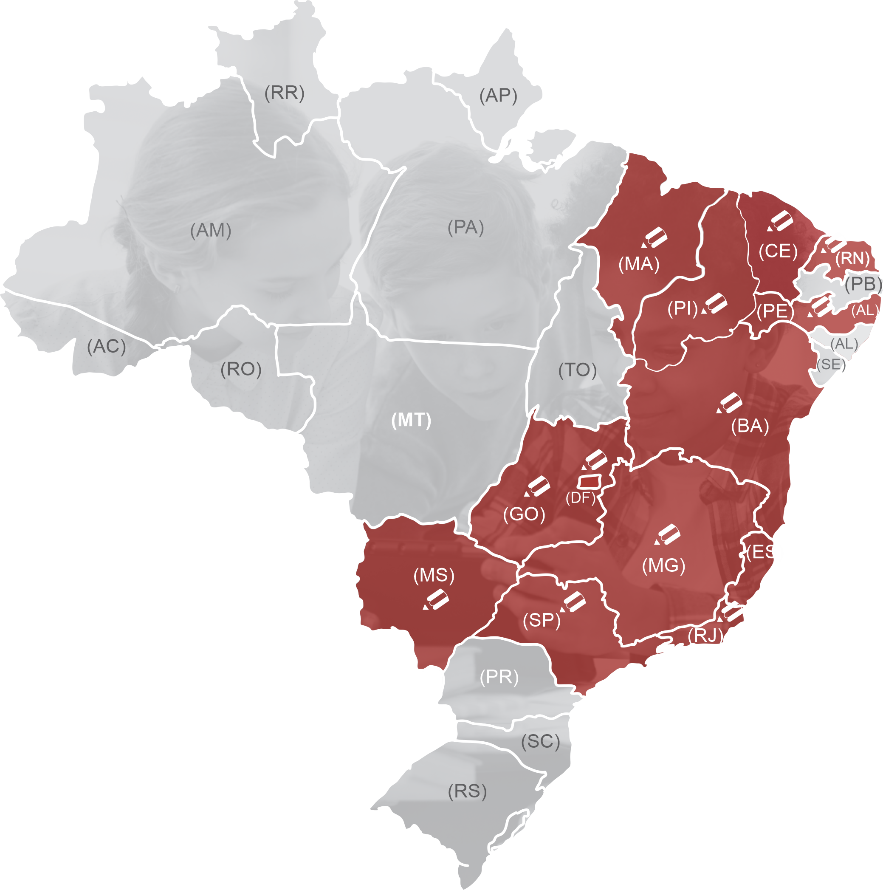

Antes de tudo, a Netbil é composta por educadores. Pais, irmãos e amigos que, como profissionais da educação, querem melhorar a qualidade do ensino a que nossos estudantes são expostos. Sabemos que eles merecem o melhor e temos o compromisso de trazer materiais e soluções educacionais envolventes, modernas, interativas e acessíveis, que permitam aos estudantes e aos professores explorarem todo o seu potencial. Isso nos tornou, ao longo dos 20 anos da nossa história, uma das maiores desenvolvedoras de softwares educacionais do Brasil, reconhecida pela excelência e qualidade dos produtos, serviços e soluções tecnológicas que oferecemos.
Com o avanço das tecnologias móveis e a exposição a diversos conteúdos simultâneos, os estudantes desenvolveram a capacidade de executar muitas tarefas ao mesmo tempo, e esse avanço tecnológico multiplica as habilidades de ensinar e aprender. Entendemos que o ensino, especialmente nos dias atuais, precisa atender essas necessidades tanto dos professores quanto dos estudantes.
Para isso, desenvolvemos uma das primeiras soluções de ensino híbrido, aliando a mais alta qualidade em materiais didáticos às mais avançadas ferramentas digitais, de gamificação (aulas interativas) a realidade aumentada. Tudo para que o professor possa explorar o conhecimento do estudante de maneira individualizada e criteriosa, sempre alimentando sua curiosidade com formatos que estimulem a busca pelo novo e a vontade de aprender cada vez mais, permitindo que as escolas possam avançar de maneira segura nos seus processos de transformação digital.
Assim, todas as soluções educacionais foram desenvolvidas para apoiar estudantes, pais ou responsáveis, professores e profissionais decisores da área na construção de uma educação que seja, de fato, eficiente e transformadora.
Nossas soluções atendem às necessidades e possibilidades de escolas de qualquer porte, em qualquer lugar do Brasil. Não é a toa que a Netbil Educacional já faz parte do dia a dia de centenas delas em todo o país.
Se a sua escola precisa de soluções educacionais que façam dela um centro de excelência, venha construir conosco o Brasil do futuro que tanto desejamos.
Venha fazer parte da família Netbil! 